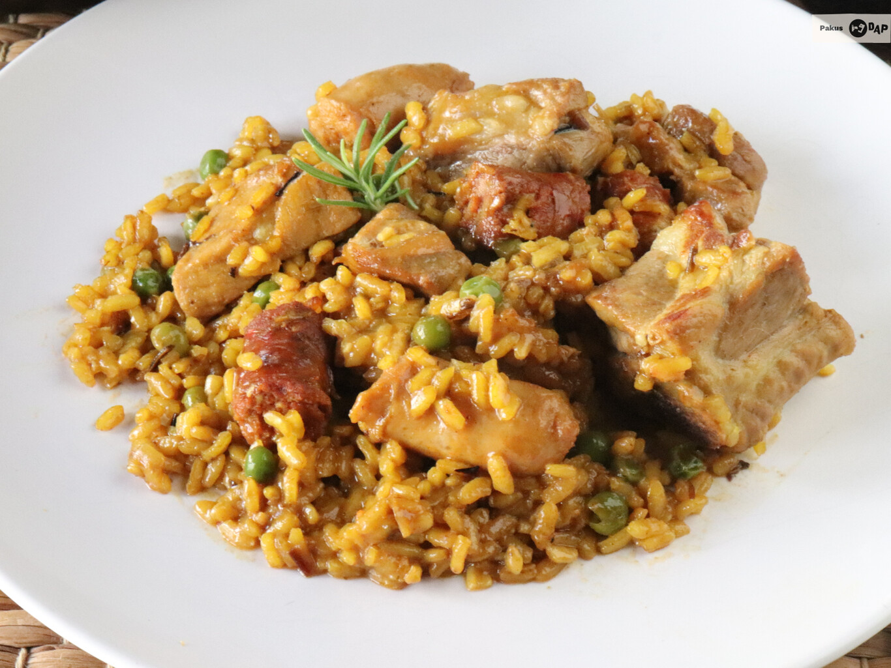

Paella Asturiana
La auténtica paella con pollo y conejo.
Ingredientes
- 400 g de arroz
- 300 g de pollo
- 300 g de conejo
- 150 g de judía verde
- 100 g de garrofón
- 1 tomate rallado
- Aceite de oliva
- Hebras de azafrán
- Caldo de pollo
- Sal

Instrucciones
- Dora el pollo y el conejo en aceite.
- Añade judía verde y sofríe.
- Incorpora tomate rallado y azafrán.
- Añade el arroz y el caldo.
- Cocina hasta que el arroz esté en su punto.
Consejos
- Deja reposar 5 minutos antes de servir.
¡Una paella tradicional perfecta!